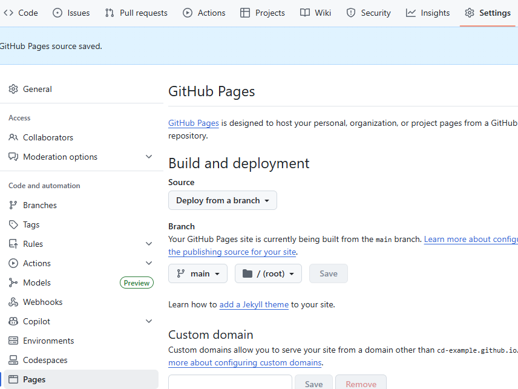

On the left side of the screen, ensure “Explorer” is opened.
Two overlapping files
A bar will pop out and at the top there will be a few icons.
Click the file with a + on it.
If missing, “mouseover” repository name!
Type index.html as the name and press enter.
A new file will open up, type “Hello, world!”
👀 Visually
Why?
We want to be able to determine what appears on our webpage.
For now, it matters less what we change than that we can change the content.
We’ll learn more soon!
💾 Save your work!
What?
We need changes made in codespaces to become changes in the repository.
You may wonder why this isn’t automatic: I’m not sure!
To do so we will change from the “Explorer” activity to the “Source Control” activity
It’s the technical term for “keeping track of code”
Lots of paperwork!
How?
Click the
Click ✓ Commit
I get a box pop-up and say Always
🚨 Alert!
This pops up :
COMMIT_EDITMSG
# Please enter the commit message for your changes. Lines starting# with '#' will be ignored, and an empty message aborts the commit.## On branch main# Your branch is up to date with 'origin/main'.## Changes to be committed:# new file: index.html#
Caution
We must name our changes.
🤝 Resolve
Add any message to the first line:
COMMIT_EDITMSG
Hi it's me :)### Please enter...
Click the ✓ on the top right.
Click Sync Changes 1 ↑
Now go back to the repository page.
There should now be an index.html there!
You may need to refresh/reload.
Why?
We don’t want just anyone or anything publish to a website we administer.
Spam, broken links, stale memes, etc.
Mostly GitHub doesn’t want that and won’t leave it up to us!
This process requires every change to be intentional.
I would rather it be easier, but that’s okay!
It gets better every year!
📺 Publish
What?
Let’s take index.html and make it a webpage!
We’ll use “GitHub Pages”
Not too hard to set up…
I use it a lot for fun 😬
You’ll be able to show anything you do to friends and family!
Back on the repository page… - <account name>.github.io/<repository name>
We’ll change repository settings.
On the top, click on Settings
On the left, click on Pages
In the middle, under branch, change “None” to “Main” via the drop-down menu.
👀 Visually

Why?
We get to examine what we did!
🔬 Examine
What?
A few minutes after “Commit+Sync”
How?
<account name>.github.io/<repository name>
Or:
Back to <> Code
Bottom right, under “Deployments”, click github-pages
There will be a link on this page under the heading github-pages
Why?
There’s many ways to publish online but this is…
Free.
Relatively quick (minutes, not hours).
Powerful enough for interactive, public webpages.
It also builds a lot of valuable skills!
Today
Source Code
---title: 📄 Webpages!---# 👋 Introduction## About MeName: (Prof.) Calvin (Deutschbein)Email: [ckdeutschbein](mailto:ckdeutschbein@willamette.edu)Website: [cd-public.github.io](https://cd-public.github.io/)Field: Hardware Security, Computer SystemsPronouns: They/Them## Goals1. **Create a *webpage***2. Make it *well-formed*3. Make it *stylish*5. Make it *graphical*4. Make it *interactive*## Technologies- GitHub! - The worlds #1 online collaboration platform!- Three languages. - HTML - for text. - CSS - for style. - JavaScript - for action.## Today- [ ] Github!- [ ] HTML!- [ ] Create a 📄 webpage# 📒 Account## What?- Create a GitHub account! - Use whatever name and password you want... - But make sure you remember them! - I really recommend using your `.edu` email address! - You get extra goodies!## How?- [Creating an account on GitHub](https://docs.github.com/en/get-started/start-your-journey/creating-an-account-on-github)- Or: - [ ] Go to [GitHub.com](https://github.com/) - [ ] Enter your email. - [ ] Click <span style="background-color:green;color:white">Sign up for GitHub</span> - [ ] Follow the steps!## Why?- GitHub is a great tool for: - Learning new technologies. - Sharing your projects. - Working on projects together. - Creating websites or portfolios.- I wish I'd learned about it sooner!# 🗃️ Repository## What?- Create a GitHub *repository*! - Repositories are how GitHub stores the information in a website - Use whatever name you want... - But make sure you remember it! - (Someday) it will live at: - `<account name>.github.io/<repository name>` - Check out [cd-example.github.io/bug-free-sniffle/](https://cd-example.github.io/bug-free-sniffle/)## How?- [Quickstart for repositories](https://docs.github.com/en/repositories/creating-and-managing-repositories/quickstart-for-repositories)- Or: - Go to [GitHub.com](https://github.com/) - It should look different now that you're logged in! - Click <span style="background-color:green;color:white"><svg style="filter:invert(1);display:inline-block" xmlns="http://www.w3.org/2000/svg" viewBox="0 0 16 16" width="1em" height="1em"><path d="M2 2.5A2.5 2.5 0 0 1 4.5 0h8.75a.75.75 0 0 1 .75.75v12.5a.75.75 0 0 1-.75.75h-2.5a.75.75 0 0 1 0-1.5h1.75v-2h-8a1 1 0 0 0-.714 1.7.75.75 0 1 1-1.072 1.05A2.495 2.495 0 0 1 2 11.5Zm10.5-1h-8a1 1 0 0 0-1 1v6.708A2.486 2.486 0 0 1 4.5 9h8ZM5 12.25a.25.25 0 0 1 .25-.25h3.5a.25.25 0 0 1 .25.25v3.25a.25.25 0 0 1-.4.2l-1.45-1.087a.249.249 0 0 0-.3 0L5.4 15.7a.25.25 0 0 1-.4-.2Z"></path></svg> New</span> - [ ] Give it a name - [ ] Add a README file - [ ] Click <span style="background-color:green;color:white">Create Repositry</span>## Why?::::{.columns}:::{.column width="65%"}- Store files that make up a webpage: - "HTML" page "content". - "CSS" page "formatting". - "JS" (JavaScript) "interactivity". - We can use images, like PNGs or SVGs.::::::{.column width="35%"}<a title="Asylum, Atlantic and Warner UK, Public domain, via Wikimedia Commons" href="https://commons.wikimedia.org/wiki/File:Charli_XCX_-_Brat_(album_cover).png"><img width="256" alt="Charli XCX - Brat (album cover)" src="https://upload.wikimedia.org/wikipedia/commons/6/60/Charli_XCX_-_Brat_%28album_cover%29.png?20250318202344"></a><p>*An image*</p>:::::::# 🌌 Codespaces## What?- Open a GitHub *codespace*! - Online code editor - Google Docs for code. - Has *a lot* of options. - We won't use most of them. - There's plenty of room to grow!## How?- [Creating a codespace for a repository](https://docs.github.com/en/codespaces/developing-in-a-codespace/creating-a-codespace-for-a-repository)- Or: - On the page for the respository you created... - `github.com/<account name>/<repository name>` - Click <span style="background-color:green;color:white"> <> Code 🔽</span> - Click the "Codespaces" tab. - Click <span style="background-color:green;color:white">Create codespace on main</span> - A new window will open... slowly.## Why?- Edit files that make up a webpages: - "HTML" page "content". - We'll do this one first! - It is the foundation of all webpages!# 👋 Hello, World!## What?- Now: The first achievement when coding!- "Hello, world!"- Within GitHub codespaces, create a new file. - It **must** be called `index.html` - HTML for "hypertext markup language" - The language of the internet!## How?- On the left side of the screen, ensure "Explorer" is opened.- Two overlapping files <svg style="filter:invert(1)" xmlns="http://www.w3.org/2000/svg" viewBox="0 0 24 24" width="1em" height="1em"><path d="M17.5 0h-9L7 1.5V6H2.5L1 7.5v15.07L2.5 24h12.07L16 22.57V18h4.7l1.3-1.43V4.5L17.5 0zm0 2.12l2.38 2.38H17.5V2.12zm-3 20.38h-12v-15H7v9.07L8.5 18h6v4.5zm6-6h-12v-15H16V6h4.5v10.5z"/></svg>- A bar will pop out and at the top there will be a few icons. - Click the file with a `+` on it. - If missing, "mouseover" repository name!- Type `index.html` as the name and press enter.- A new file will open up, type "Hello, world!"## 👀 Visually## Why?- We want to be able to determine what appears on our webpage.- For now, it matters less *what* we change than *that* we can change the content.- We'll learn more soon!# 💾 Save your work!## What?- We need changes made in codespaces to become changes in the repository. - You may wonder why this isn't automatic: I'm not sure!- To do so we will change from the "Explorer" activity to the "Source Control" activity - It's the technical term for "keeping track of code"- Lots of paperwork!## How?- Click the <svg style="filter:invert(1)" xmlns="http://www.w3.org/2000/svg" viewBox="0 0 16 16" width="1em" height="1em"><path d="M9.5 3.25a2.25 2.25 0 1 1 3 2.122V6A2.5 2.5 0 0 1 10 8.5H6a1 1 0 0 0-1 1v1.128a2.251 2.251 0 1 1-1.5 0V5.372a2.25 2.25 0 1 1 1.5 0v1.836A2.493 2.493 0 0 1 6 7h4a1 1 0 0 0 1-1v-.628A2.25 2.25 0 0 1 9.5 3.25Zm-6 0a.75.75 0 1 0 1.5 0 .75.75 0 0 0-1.5 0Zm8.25-.75a.75.75 0 1 0 0 1.5.75.75 0 0 0 0-1.5ZM4.25 12a.75.75 0 1 0 0 1.5.75.75 0 0 0 0-1.5Z"></path></svg>- Click <span style="background-color:blue;color:white"> ✓ Commit </span> - I get a box pop-up and say <span style="border: 2px solid black;background-color:gray;color:black;">Always</span>## 🚨 Alert!- This pops up :```{.email filename="COMMIT_EDITMSG"}# Please enter the commit message for your changes. Lines starting# with '#' will be ignored, and an empty message aborts the commit.## On branch main# Your branch is up to date with 'origin/main'.## Changes to be committed:# new file: index.html#```:::{.callout-caution}We must *name our changes*.:::## 🤝 Resolve- Add any message to the first line:```{.email filename="COMMIT_EDITMSG"}Hi it's me :)### Please enter...```- Click the `✓` on the top right.- Click <span style="background-color:blue;color:white"><svg style="filter:invert(1)" xmlns="http://www.w3.org/2000/svg" viewBox="0 0 16 16" width="1em" height="1em"><path d="M1.705 8.005a.75.75 0 0 1 .834.656 5.5 5.5 0 0 0 9.592 2.97l-1.204-1.204a.25.25 0 0 1 .177-.427h3.646a.25.25 0 0 1 .25.25v3.646a.25.25 0 0 1-.427.177l-1.38-1.38A7.002 7.002 0 0 1 1.05 8.84a.75.75 0 0 1 .656-.834ZM8 2.5a5.487 5.487 0 0 0-4.131 1.869l1.204 1.204A.25.25 0 0 1 4.896 6H1.25A.25.25 0 0 1 1 5.75V2.104a.25.25 0 0 1 .427-.177l1.38 1.38A7.002 7.002 0 0 1 14.95 7.16a.75.75 0 0 1-1.49.178A5.5 5.5 0 0 0 8 2.5Z"></path></svg> Sync Changes 1 ↑ </span>- Now *go back* to the *repository* page. - There should now be an `index.html` there! - You may need to refresh/reload.## Why?- We don't want just *anyone* or *anything* publish to a website we administer. - Spam, broken links, stale memes, etc. - Mostly *GitHub* doesn't want that and won't leave it up to us!- This process requires every change to be intentional. - I would rather it be easier, but that's okay! - It gets better every year!# 📺 Publish## What?- Let's take `index.html` and make it a webpage!- We'll use "GitHub Pages" - Not too hard to set up... - I use it a lot for fun 😬- You'll be able to show anything you do to friends and family!## How?- [Creating a GitHub Pages site](https://docs.github.com/en/pages/getting-started-with-github-pages/creating-a-github-pages-site)- Or: - Back on the *repository* page... - `<account name>.github.io/<repository name>` - We'll change repository settings. - On the top, click on <span style="background-color:white;color:black;"><svg xmlns="http://www.w3.org/2000/svg" viewBox="0 0 16 16" width="1em" height="1em"><path d="M8 0a8.2 8.2 0 0 1 .701.031C9.444.095 9.99.645 10.16 1.29l.288 1.107c.018.066.079.158.212.224.231.114.454.243.668.386.123.082.233.09.299.071l1.103-.303c.644-.176 1.392.021 1.82.63.27.385.506.792.704 1.218.315.675.111 1.422-.364 1.891l-.814.806c-.049.048-.098.147-.088.294.016.257.016.515 0 .772-.01.147.038.246.088.294l.814.806c.475.469.679 1.216.364 1.891a7.977 7.977 0 0 1-.704 1.217c-.428.61-1.176.807-1.82.63l-1.102-.302c-.067-.019-.177-.011-.3.071a5.909 5.909 0 0 1-.668.386c-.133.066-.194.158-.211.224l-.29 1.106c-.168.646-.715 1.196-1.458 1.26a8.006 8.006 0 0 1-1.402 0c-.743-.064-1.289-.614-1.458-1.26l-.289-1.106c-.018-.066-.079-.158-.212-.224a5.738 5.738 0 0 1-.668-.386c-.123-.082-.233-.09-.299-.071l-1.103.303c-.644.176-1.392-.021-1.82-.63a8.12 8.12 0 0 1-.704-1.218c-.315-.675-.111-1.422.363-1.891l.815-.806c.05-.048.098-.147.088-.294a6.214 6.214 0 0 1 0-.772c.01-.147-.038-.246-.088-.294l-.815-.806C.635 6.045.431 5.298.746 4.623a7.92 7.92 0 0 1 .704-1.217c.428-.61 1.176-.807 1.82-.63l1.102.302c.067.019.177.011.3-.071.214-.143.437-.272.668-.386.133-.066.194-.158.211-.224l.29-1.106C6.009.645 6.556.095 7.299.03 7.53.01 7.764 0 8 0Zm-.571 1.525c-.036.003-.108.036-.137.146l-.289 1.105c-.147.561-.549.967-.998 1.189-.173.086-.34.183-.5.29-.417.278-.97.423-1.529.27l-1.103-.303c-.109-.03-.175.016-.195.045-.22.312-.412.644-.573.99-.014.031-.021.11.059.19l.815.806c.411.406.562.957.53 1.456a4.709 4.709 0 0 0 0 .582c.032.499-.119 1.05-.53 1.456l-.815.806c-.081.08-.073.159-.059.19.162.346.353.677.573.989.02.03.085.076.195.046l1.102-.303c.56-.153 1.113-.008 1.53.27.161.107.328.204.501.29.447.222.85.629.997 1.189l.289 1.105c.029.109.101.143.137.146a6.6 6.6 0 0 0 1.142 0c.036-.003.108-.036.137-.146l.289-1.105c.147-.561.549-.967.998-1.189.173-.086.34-.183.5-.29.417-.278.97-.423 1.529-.27l1.103.303c.109.029.175-.016.195-.045.22-.313.411-.644.573-.99.014-.031.021-.11-.059-.19l-.815-.806c-.411-.406-.562-.957-.53-1.456a4.709 4.709 0 0 0 0-.582c-.032-.499.119-1.05.53-1.456l.815-.806c.081-.08.073-.159.059-.19a6.464 6.464 0 0 0-.573-.989c-.02-.03-.085-.076-.195-.046l-1.102.303c-.56.153-1.113.008-1.53-.27a4.44 4.44 0 0 0-.501-.29c-.447-.222-.85-.629-.997-1.189l-.289-1.105c-.029-.11-.101-.143-.137-.146a6.6 6.6 0 0 0-1.142 0ZM11 8a3 3 0 1 1-6 0 3 3 0 0 1 6 0ZM9.5 8a1.5 1.5 0 1 0-3.001.001A1.5 1.5 0 0 0 9.5 8Z"></path></svg> Settings</span> - On the left, click on <span style="background-color:white;color:black;"><svg xmlns="http://www.w3.org/2000/svg" viewBox="0 0 16 16" width="1em" height="1em"><path d="M0 2.75C0 1.784.784 1 1.75 1h12.5c.966 0 1.75.784 1.75 1.75v10.5A1.75 1.75 0 0 1 14.25 15H1.75A1.75 1.75 0 0 1 0 13.25ZM14.5 6h-13v7.25c0 .138.112.25.25.25h12.5a.25.25 0 0 0 .25-.25Zm-6-3.5v2h6V2.75a.25.25 0 0 0-.25-.25ZM5 2.5v2h2v-2Zm-3.25 0a.25.25 0 0 0-.25.25V4.5h2v-2Z"></path></svg> Pages</span> - In the middle, under branch, change "None" to "Main" via the drop-down menu.## 👀 Visually## Why?- We get to examine what we did!# 🔬 Examine## What?- [ ] Check our work.- [ ] Learn how to see where updates will show up. - A few minutes after "Commit+Sync"- [ ] Tell ourselves we did a good job!## How?- `<account name>.github.io/<repository name>`- Or: - Back to <span style="background-color:white;color:black;"><> Code</span> - Bottom right, under "Deployments", click `github-pages` - There will be a link on this page under the heading `github-pages`## Why?- There's many ways to publish online but this is... - Free. - *Relatively* quick (minutes, not hours). - Powerful enough for interactive, public webpages.- It also builds *a lot* of valuable skills!## Today- [x] Github!- [x] HTML!- [x] Create a 📄 webpage
.png)